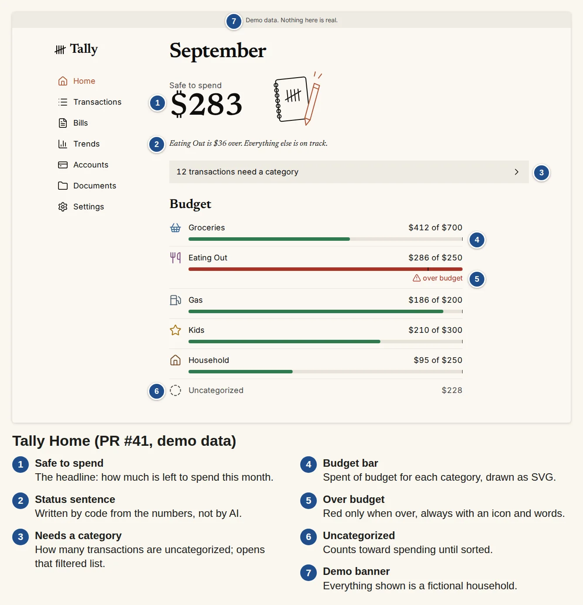

Building
Tally
Review your transactions, set monthly budgets and see how much remains to spend.
1
Safe to spend
The headline: how much is left to spend this month.
2
Status sentence
Written by code from the numbers, not by AI.
3
Needs a category
How many transactions are uncategorized; opens that filtered list.
4
Budget bar
Spent of budget for each category, drawn as SVG.

In development · public demo
thesuperhuman.us/building/tally